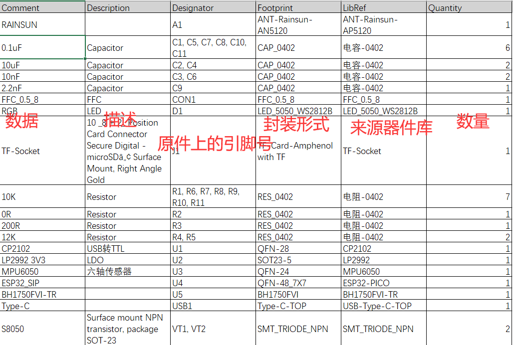
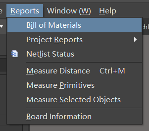
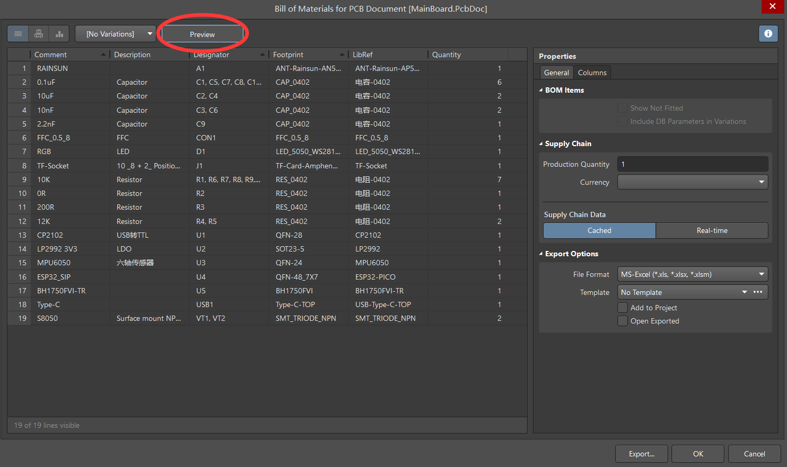
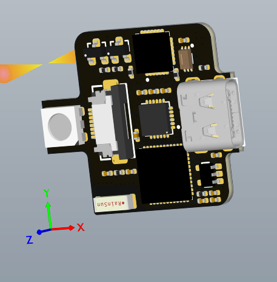
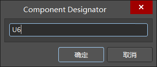
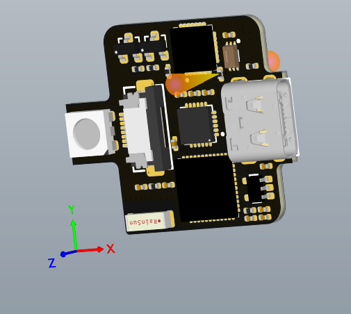
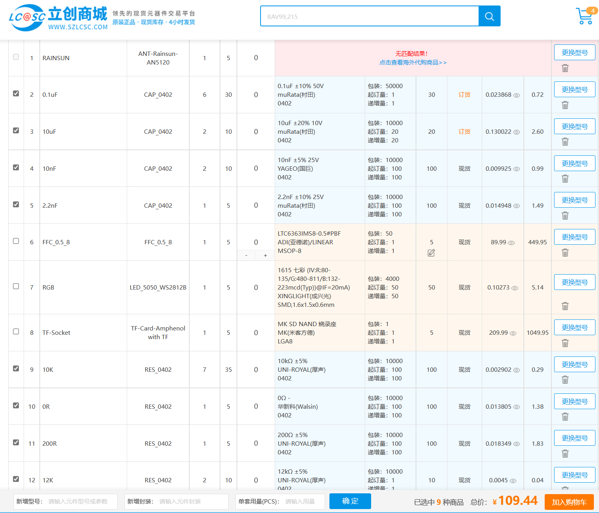

HoloCubic打样(2)——元器件采购
纪念一下自己纯粹出于兴趣做的这个小项目，今天完成了元器件的采购，需要买到的东西也到货了大半。
下面讲讲自己在元器件采购的问题上遇到的坑。
从Altium Designer中导出BOM清单
BOM是bill of material的意思，在买电子元器件的时候，大家都用BOM称呼材料清单。电路板的BOM清单里面有下面这六列数据，我们在购买元件的时候主要看Comment、Description、Quantity和Footprint这4列。

首先导出BOM清单。在Altium Designer里面打开电路板pcb文件，然后点击Reports菜单下的Bill of Materials，就可以查看BOM了。

然后点击Preview，就可以导出把BOM清单导出到Excel了。

在3d预览图里查看板子上元器件的位置
在二维预览模式下看元器件位置不太方便，首先在View-3D Layout Mode调成3d视角，或者直接按主键盘区的数字键3也可以。

调成如图所示的3d模式之后，点击元件之后输入JC，就会输入查找元件的对话框。

在这里输入对应元器件的引脚号(我输入的是R1)，鼠标就会移动到相对应的元器件上了。

根据BOM清单买元件
之后是买元器件了，淘宝上有对应的BOM商家，一般会只要提交BOM表格就可以。也可以自己在不同的店家选配，我就是自己选配的。
买元器件首推立创商城，在百度搜索就可以找得到。立创商城支持BOM智能配单，直接把BOM表格导入进去就行，还是很贴心的。

手动检查一下系统自动生成清单，如果没有问题就可以直接下单了。当然在立创这里一部分元器件会比较贵，比较会过日子的同学也可以单独去淘宝买。
下面贴一些可能会用到的知识。